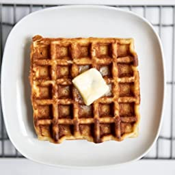

Classic Waffles

Description
A lovely, crispy waffle perfect for the morning.
A quick and easy way to quick start you morning!!
Remember its the most important meal of the day.
Ingredients
- 2 cups all-purpose flour
- 1 teaspoon salt
- 4 teaspoons baking powder
- 2 tablespoons white sugar
- 2 eggs
- 1 1/2 cups warm milk
- 1/3 cup butter,melted
- 1 teaspoon vanilla extract
Steps
- In a large bowl, mix together flour, salt, baking powder and sugar;
set aside. Preheat waffle iron to desired temperature.
- In a separate bowl, beat the eggs. Stir in the milk, butter and vanilla.
pour the milk mixture into the flour mixture; beat until blended.
- Ladle the batter into a preheated waffle iron.
Cook the waffles until golden and crisp. Serve immediately.
- Enjoy.